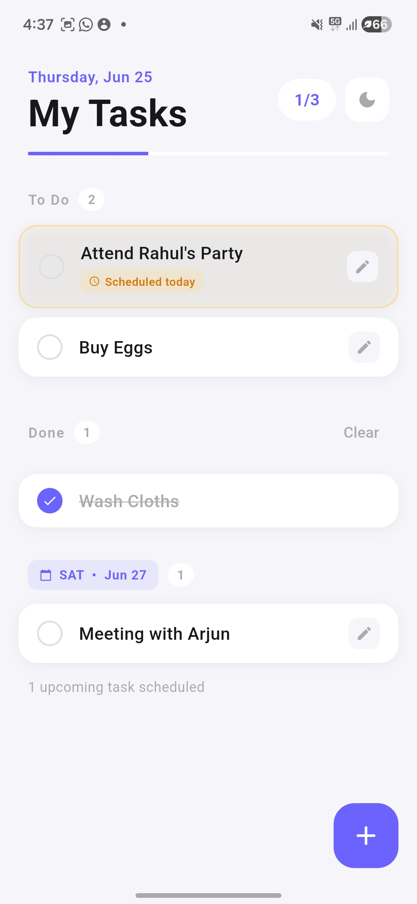

TaskFlow
A minimalistic task manager built with Flutter — daily carry-over, smart scheduling, and a beautiful UI that stays out of your way.
Built as a personal hobby project. Simple, private, and fully offline.

Features
Daily Carry-over
Unfinished general tasks automatically roll over to the next day — nothing falls through the cracks.
Smart Scheduling
Schedule tasks for any future date. Upcoming tasks are grouped by date so your list stays organised.
Overdue Tracking
Missed scheduled tasks carry over with a subtle indicator so you always know what's overdue.
High Priority
Flag important tasks to pin them at the top of your list. Critical things never get buried.
Progress Indicator
At-a-glance task counter and progress bar show how much you've done vs. what's left for the day.
Dark & Light Mode
Beautifully crafted themes for day and night. Your preference is saved automatically.
Fully Local — No Cloud, No Account
All tasks are saved on your device using SQLite. No sign-up, no internet connection, no data leaving your phone. Ever.
Built for how you actually work
Drag or swipe to explore
Installation
Requirements
- Android 6.0 (Marshmallow) or later
- ARM64 or x86_64 device
- ~20 MB free storage after install
- No internet connection required
Install steps
-
1
Download the APK
Tap Download above or get it from GitHub Releases.
-
2
Allow unknown sources
Settings → Security → enable Install unknown apps for your browser or file manager.
-
3
Open the APK
Tap the downloaded file in your notifications or file manager and follow the prompts.
-
4
Start organising
Open TaskFlow and add your first task. No sign-up, no setup — ready immediately.
Ready to stay organised?
Free forever. No ads. No account. Just tasks.
Download TaskFlow APKAndroid 6.0+ · v1.0.0 · MIT License
Co-authored with Claude by Anthropic.